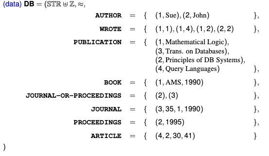
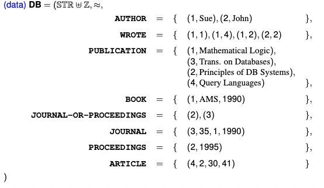
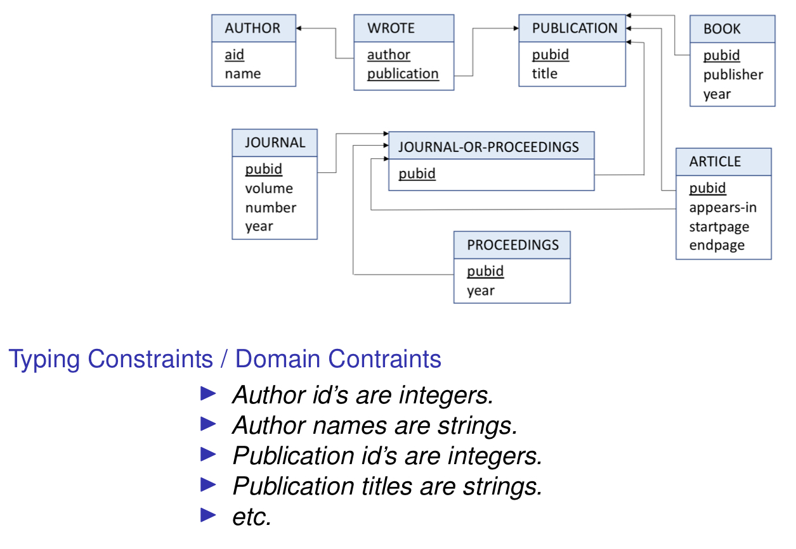
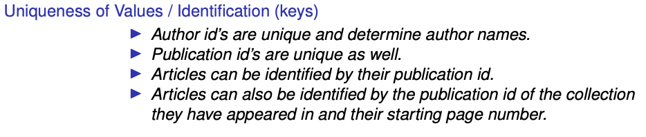
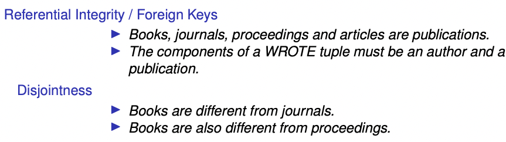

❗
Relational CalculusDML for the RM model
Queries → FOL formulas
Answers → sets of tuples (relations) satisfying the query
❗
SQL is relationally complete ↔ expresses Range Restricted RC
Relational Database
| Signature (metadata) | Instance (data) |
ρ
{
intensions } | DB
{ extensions } |
| (R1/k1,...,Rn/kn) | (D,≈,R1,...,Rn) |
Domain D
set of values with:
Relation
| Intension (metadata) | Extension (data) |
R/k
R Relation name
k # attributes | R
{tuples: values in D} |
Examples:
Integers with addition and multiplication
ρ=(PLUS/3,TIMES/3) DB=(Z,≊,PLUS,TIMES)
Integers with addition and multiplication
ρ=(EMP/3) DB=(STR,≊,EMP)
Bibliography Database
 

Query Conditions
❗
Free VariablesVariables not bound by an existential quantifier
❗
Range RestrictedValues that satisfy the condition/query → exist in the (finite) database
Grammar (Conditions)
Given:
{a,b,c…} (variables)
c (constant)
| R(…) |
| φ2∧(a=b) |
| a=c |
| φ2∧φ3 |
| φ2∨φ3 |
| ∃a.φ2 |
| ¬φ2 |
Syntactic Sugar
| ∃x.R(…,x,…)∧x=c | R(…,c,…) |
| ∃x. R(…,x,…) | R(…,−,…) |
| ¬∃x.¬φ | ∀x.φ |
❗
ConjunctiveUse only 1, 2, 3, 4, 6
Positive
Conjunctive + ∨
First Order
Use all of them (positive + ¬)
Truth of Conditions
3 Factors for Truth Evaluation:
- θ
- DB
- φ over ρ
φ is true means: DB,θ⊨ρ
❗
Atomic TruthRelations(Tuples) present in an instance ⇒ true
Example
(2,John)∈AUTHOR
- “John is the name of an author with id 2” = true
- tuple (2,John) ⇒ present in the relation AUTHOR
(1,MathLogic)∈PUBLICATION
- “MathLogic is the title of a publication” = true
- tuple (1,MathLogic) ⇒ present in the relation PUBLICATION
❗
ValuationTruth of conditions with variables depends on valuations
θ:{x1,x2,...}↦D
To modify what value variable x maps to:
θ[x↦v] Example
AUTHOR(x,y)=true of valuation {x↦v1,y↦v2,...} when (v1,v2)∈AUTHOR
Queries
❗
RC Query{(x1,…,xn)∣φ}
- {(x1,…,xn)}=Fv(φ)
- φ is a condition in the grammar above
❗
AnswersValuations that make φ true w’ respect to the database
The relation:
φ(D)={θFv(φ):D,θ⊨φ} Examples
❗
Integrity ConstraintsSentences (don’t need a valuation) that are true for every DB instance
Examples
Ex 1: Integrity Constraints for PLUS
integrity constraints: laws for N

Ex 2: Integrity Constraints for Employees

Ex 3: Bibliography Integrity Constraints

❗
ViewsAn extension, R defined by an integrity constraint of the form:
∀x1,…xn.R(x1,…xn)↔φ Where x1,…,xn=Fv(φ)
Notes
- φ defines the view
- R depends tables mentioned in φ
- R actually occurs in the database schema (signature)
Ex
The extension of table JOURNAL-OR-PROCEEDINGS is the union of the pubid’s
occurring in table
JOURNAL and in table PROCEEDINGS
∀p.JournalOrProceedings(p)↔(JOURNAL(p)∨PROCEEDINGS(p))
❗
SchemaThe pair:
- Σ (set of integrity constraints)
Requirements of DML
1 - Consistent
❗
Consistent DBAll integrity constraints are true for all valuations
∀φ∈Σ,DB,θ⊨φ
2 - Safety
❗
Safety ⟺- DB instance is finite
- Queries are domain independent
Domain Dependence
| Answer depends on DB | Answer depends on D (domain) |
| {answers} finite | {answers} not finite |
Examples
- watch out for ∨,¬
| ¬∃x.R(x,y) | Yes (notice, looking for not exists) |
| S(y)∧¬∃x.R(x,y) | No |
| S(y)∨¬∃x.R(x,y) | Yes (notice the conjunction) |
| S(x)∧¬R(x,y) | Yes |
| S(x)∧R(x,y) | No |
| S(x)∧¬∃R(x,y) | No |
Examples (Unsafe)
{(x,y,z)∣book(x,y,z)∨article(x,y)}
- The # variables on either side of the conjunction are not the same!
- The third one z can be any value in D (not finite)
{(x,y)∣x=y}
- has a tuple for every element in the D (not finite)
3 - Satisfiability
❗
Query SatisfiabilityIs there a finite DB instance for which query has answers? (undecidable)
φ is satisfiable ⟺x=y∧∃x1,…,xk.φ is domain independent
Solution
❗
Range Restricted Query → Domain Independent → Safe
❗
Range Restricted RC QueryA query {(x1,…,xn)∣φ}
2 Rules
- {x1,…,xn}=Fv(φ)
- φ is range restricted
Range Restricted φ
Notice:
- ¬φ is not in the language
| R(…) | |
| φ2∧(a=b) | Fv(a,b),Fv(φ2) have none in common |
| a=c | |
| ∃a.φ2 | |
| φ2∧φ3 | |
| φ2∨φ3 | Same Free Variables |
| φ2∧¬φ3 | Same Free Variables |
❗
Complete DML ← Covers all of RC
Can Represent
- All domain-independent/safe queries
- Complete/Consistent/Finite DB
Can’t Represent
- ordering, arithmetic, string operations
- incomplete/inconsistent DB
- tuples with null/unknown values


{kind=link}
{kind=link}
{kind=link}
{kind=link}
{kind=link}